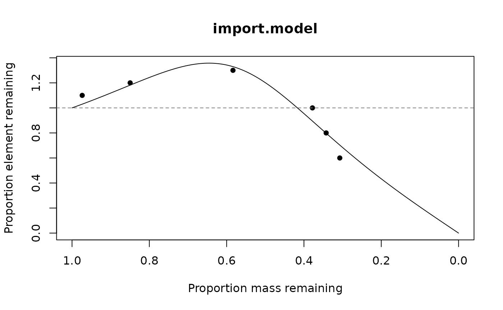

Fits a curve describing how the proportion of an element remaining (for example nitrogen, \(N/N_0\)) changes with the proportion of litter mass remaining (\(M/M_0\)) in a single decomposition cohort. Elements are often immobilised early in decomposition (element remaining rises above 1) and released later.
Usage
fit_element(
mass.remaining,
element.remaining,
model = c("import.model"),
iters = 500,
upper = NULL,
lower = NULL,
quiet = FALSE,
...
)Arguments
- mass.remaining
proportional mass remaining, \(M/M_0\). Values slightly above 1 or below 0 are kept and treated as measurement error, with a warning (see
fit_litter).- element.remaining
proportional element remaining, \(N/N_0\). Values above 1 (net immobilisation) are expected.
- model
the element model; currently only
"import.model"(see Details)- iters
number of random starts for the fitting
- upper, lower
optional bounds for the parameters, in the order given in Details
- quiet
if
TRUE, suppress the message reporting the number of successful fits- ...
additional arguments passed to
optim
Value
An elementfit object, with methods for print, plot,
coef, fitted, residuals, predict, nobs,
logLik (so AIC() and BIC() work), tidy, glance
and augment, and support in bootstrap_parameters. Its elements
include optimFit, logLik, fitAIC, fitAICc,
fitBIC, mass, element, predicted, model and
nparams.
Details
import.model is the nitrogen release model of Parton et al. (2007), written here for proportional mass remaining \(x\): $$f(x) = \frac{x/b}{\sqrt{(2ax/b)^2 + (1 - (x/b)^2)^2}}, \qquad y = f(x) / f(1)$$ so the curve passes through 1 at \(x = 1\) (no mass lost). \(b\) (bounds 0.01–1) sets the mass remaining around which the immobilisation peak is centred, and \(a\) (bounds 0.1–10) controls the height and width of the peak; small \(a\) gives a tall, narrow peak. The original formulation used percent mass remaining (normalised at 100, with \(b\) between 1 and 100); this version is equivalent with \(b\) divided by 100.
Fitting uses the same multi-start likelihood approach as fit_litter, and
gives the same warnings for parameters on a boundary and for mass values outside 0–1.
References
Parton, W., Silver, W. L., Burke, I. C., et al. (2007) Global-scale similarities in nitrogen release patterns during long-term decomposition. Science, 315, 361–364.
See also
fit_litter for mass loss through time,
elementfit_methods, bootstrap_parameters
Examples
fit <- fit_element(
mass.remaining = pineneedles$Mass.remaining,
element.remaining = c(1.1, 1.2, 1.3, 1, 0.8, 0.6),
iters = 200, quiet = TRUE
)
fit
#> elementfit object: model import.model fit to 6 observations
#> Parameters:
#> a b
#> 0.4920 0.6457
#> Peak element remaining: 1.36 at mass remaining 0.646
#> logLik: 7.608 AIC: -11.217 AICc: -7.217 BIC: -11.633
plot(fit)

glance(fit)
#> model nobs nparams sigma logLik AIC AICc BIC
#> 1 import.model 6 2 0.06808585 7.608284 -11.21657 -7.216568 -11.63305
#> converged peak_element mass_at_peak
#> 1 TRUE 1.357312 0.6456784